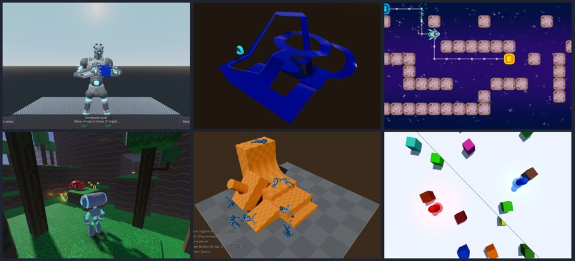
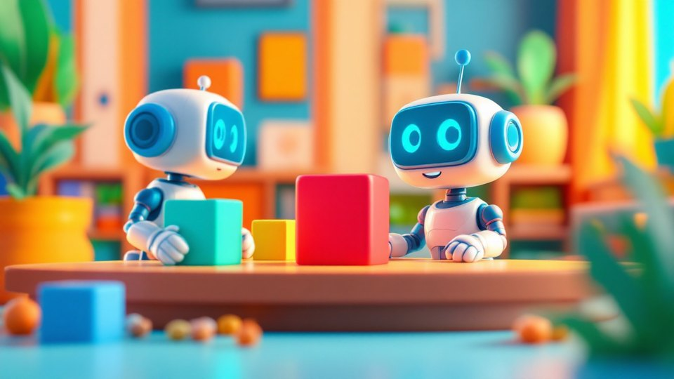
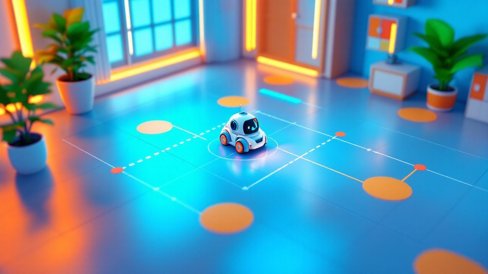

你負責說，AI 負責寫，機器人負責動
不用買任何硬體。用白話把目標告訴 AI，在 Godot 做出會找路、會看、會抓、會讓人的機器人， 匯出網頁版，學生用手機就能玩。
路徑規劃、機器視覺、機械手臂、人機協作安全、自駕循跡、AI 大腦——協作機器人最關鍵的技術，全部親手做出來。
下載免安裝的 Godot、跑起 GitHub 上的官方 3D 範例，把 Godot 技能裝進 Codex，第一次用一句話改造遊戲。

卡車小鎮之外，官方還有 138 個範例。挑出跟機器人最相關的 26 個：找路、物理、手臂、相機、狀態機，一頁一個，按一下就下載。
白話告訴 Codex 你要什麼，做出 3D 機器人小車收集能量方塊；一句話換造型、顏色、軌跡和場地，匯出網頁版，全班用手機掃 QR 就能玩。
格子地圖上 A* 和 BFS 同場比賽，自己畫牆、放泥巴，看機器人怎麼繞路找到最短路線。
多台搬運車同時接單送貨，遇到移動障礙即時重新規劃、互相讓路。

機器人頭上的相機畫面即時顯示，找出紅綠藍物件並框起來。
現場拍樣本、現場訓練，機器人學會分辨新物件並顯示信心值。

點相機畫面，算出地面真實位置，小車自己開過去，誤差一目了然。
這幾件事在家裡先做完，課堂上才不會卡在安裝。
AI機器人實作
AI機器人實作\Godot